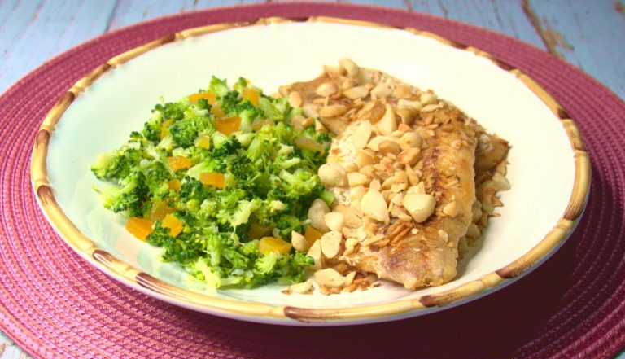

Vá direto ao tipo de receita que você procura: Café da manhã Entradas e saladas Massas Almoço Acompanhamentos Lanches Jantar Sopas Bebidas Sobremesas
Pão de queijo fit fácil Testada por Rodrigo Vilasbôasatualizada em 27/11/2023 12 unidades 20min 5.0 de 5 (1) fiz esta receita salvar Ingredientes 1/2 xícara de chá polvilho doce 1/2 xícara de chá de polvilho azedo 1/2 xícara de chá de queijo mussarela ralado 1/2 xícara de chá de queijo parmesão ralado 1 xícara de chá de creme de ricota (requeijão ou creme de leite) Sal a gosto
.webp)
Pão de queijo de liquidificador fácil Testada por Marcelo Meloatualizada em 10/10/2024 15 unidades 35min 5.0 de 5 (4) fiz esta receita salvar É tão rápido que dá para acordar e preparar pão de queijo quentinho para o café da manhã. Nada de ficar sovando massa. Todos os ingredientes vão ao liquidificador, depois é só encher as forminhas e levar para assar. Cresce que é uma beleza e fica queijudo na medida certa. Ingredientes 2 xícaras de chá de polvilho azedo (300 gramas) 1 ovo médio 1/2 xícara de chá de óleo (120 ml) 1 xícara de chá de leite (240 ml) 1 colher de chá de sal (ou a gosto) 200 gramas de mussarela Publicidade
Frango com legumes Testada por Rodrigo Vilasbôasatualizada em 11/06/2024 5 porções 50min 4.4 de 5 (5) fiz esta receita salvar Lista de ingredientes 3 filés de peito de frango 2 pimentões grandes (um verde e um vermelho) 1 cebola média 1 xícara de chá de cenoura 1 xícara de chá de couve-flor 2 xícaras de chá de brócolis frescos picados 2 colheres de sopa de azeite 1 e 1/2 dente de alho picado 2 colheres de sopa de mel 3 colheres de sopa de shoyu Sal a gosto 1 colher de sopa de vinagre de maçã Publicidade